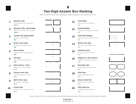
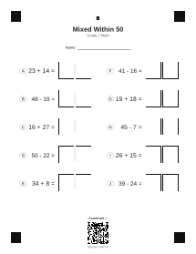
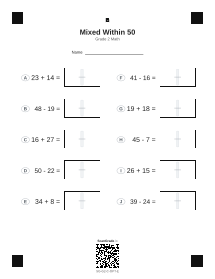
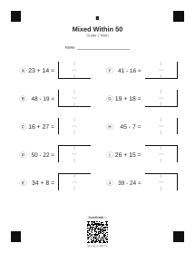
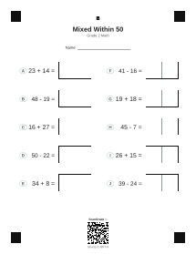
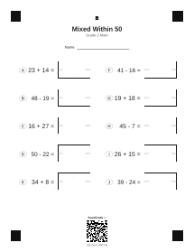
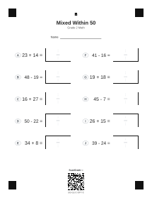

Ranked 20 Answer Box Variants
A single comparison sheet ordered by expected OCR reliability, from best to worst.
Top recommendation to test first: #1 Separate cells or #2 Separate cells with open bridge.
Open ranked SVGD-F are three new worksheet-safe variants for two-digit answers, shown first. A-C remain below for comparison. These are comparison mockups only; the production worksheets and OCR layout files are untouched.

A single comparison sheet ordered by expected OCR reliability, from best to worst.
Top recommendation to test first: #1 Separate cells or #2 Separate cells with open bridge.
Open ranked SVG
Two clear digit cells with a real blank gutter between them.
Strongest OCR geometry: no center line can be mistaken for a digit.
Open printable SVG
One answer box with a soft no-writing band between digits.
Best A-like variant if we want one visual box but clearer digit lanes.
Open printable SVG
A joined box with only top and bottom split marks, leaving handwriting space open.
Most elegant compromise: visible structure with fewer OCR artifacts.
Open printable SVG
Most OCR-first. Two obvious cells inside one answer.
Best when reliability matters more than looking traditional.
Open printable SVG
Most traditional. One answer box with subtle midpoint notches.
Best when you want the sheet to feel like a familiar worksheet.
Open printable SVG
Balanced. Clear digit zones without a full OCR-confusing line.
My pick: strongest balance of classroom feel and scan reliability.
Open printable SVG